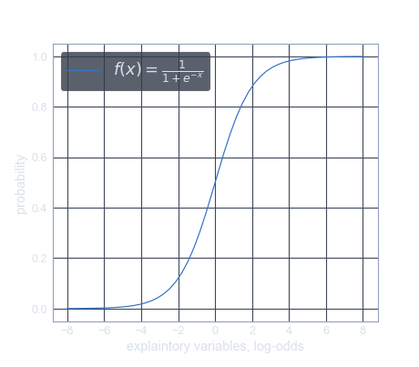

Introduction
In statistics, the Logistic Model is a statistical model that is usually taken to apply to a binary dependent variable. In regression analysis, Logistic Regression is estimating the parameters of a logistic model.
More formally, a logistic model is one where the log-odds of the probability of an event is a linear combination of independent or predictor variables. The two possible dependent variable values are often labelled as "1" and "0", which represent outcomes such as pass/fail, win/lose, alive/dead or healthy/sick ... whatever.
The binary logistic regression model can be generalized to more than two levels of the dependent variable: categorical outputs with more than two values are modelled by multinomial logistic regression, and if the multiple categories are ordered, by ordinal logistic regression, for example the proportional odds ordinal logistic model.